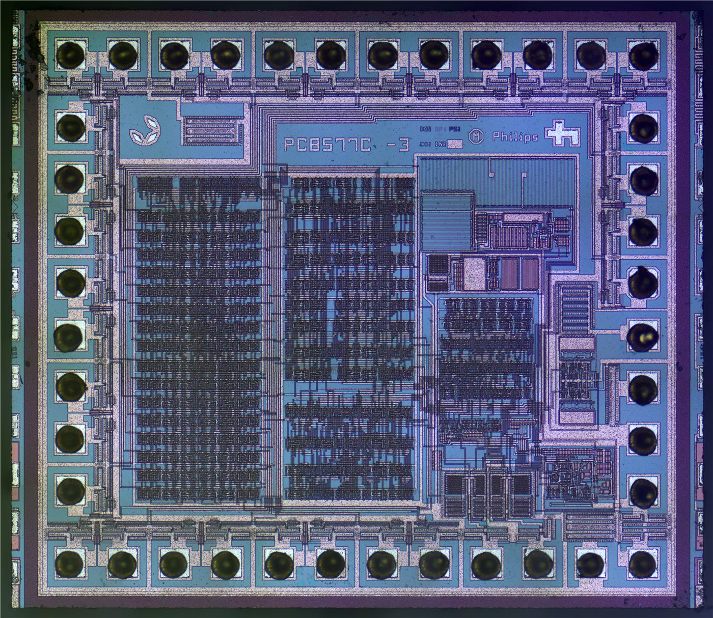

OECD, 한국 성장률 2.6%로 상향…반도체·AI 수출이 끌었다
경제협력개발기구가 올해 한국 성장 전망을 1.7%에서 2.6%로 크게 올렸다. AI 호황에 힘입은 견조한 반도체 수출이 근거로 꼽혔다.
주유민 기자 · 2026.06.18
橋경제·전망

OECD가 올해 한국의 경제성장률 전망치를 석 달 전 1.7%에서 2.6%로 상향했다. AI 붐 속에서 반도체 수출이 견조하게 받쳐 준 점이 주된 이유로 제시됐다.
광고 문의 · 300×250반도체는 한국 수출의 핵심 품목으로, 데이터센터·AI 인프라 투자가 늘면서 수요가 확대됐다. 다만 성장의 무게가 특정 품목에 쏠릴수록 경기의 진폭은 그 업황에 좌우되기 쉽다.
물가는 변수다. 중동발 유가 상승의 영향이 다른 부문으로 번지면서, 6월 물가도 3%대 흐름을 이어갈 것으로 전망된다. 성장률 상향과 물가 부담이 동시에 나타나는 셈이다.
華橋時報는 성장 전망의 상향이 곧바로 생활의 개선을 뜻하지 않는다는 점을 짚는다. 수출 호조의 온기가 내수와 일자리로 퍼지는 데에는 시차가 있고, 그 사이 환율·물가의 부담은 가계에 먼저 닿는다.
출처·참고 (사실 확인용 — 본문은 직접 재작성)
· OECD
· 경향신문
· OECD
· 경향신문